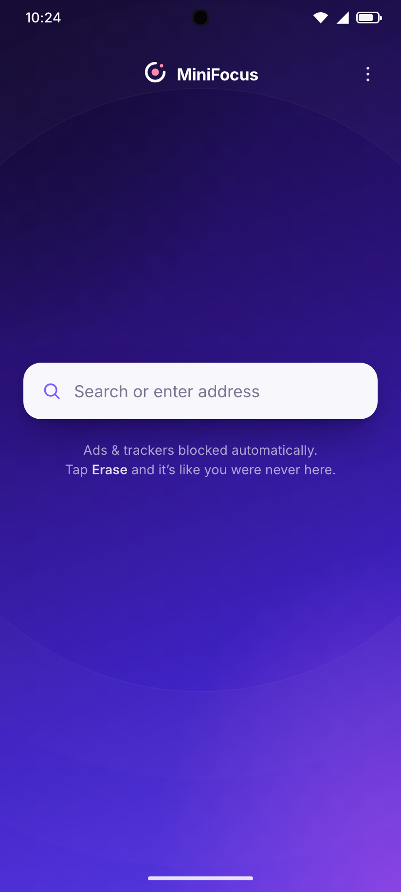
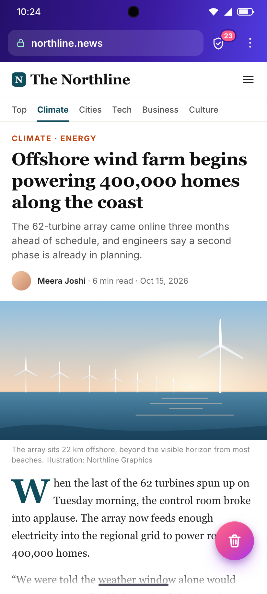
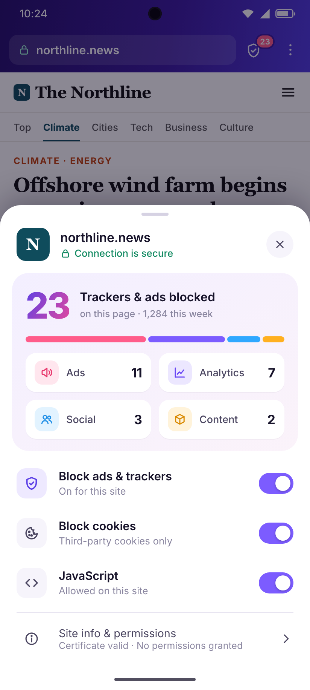
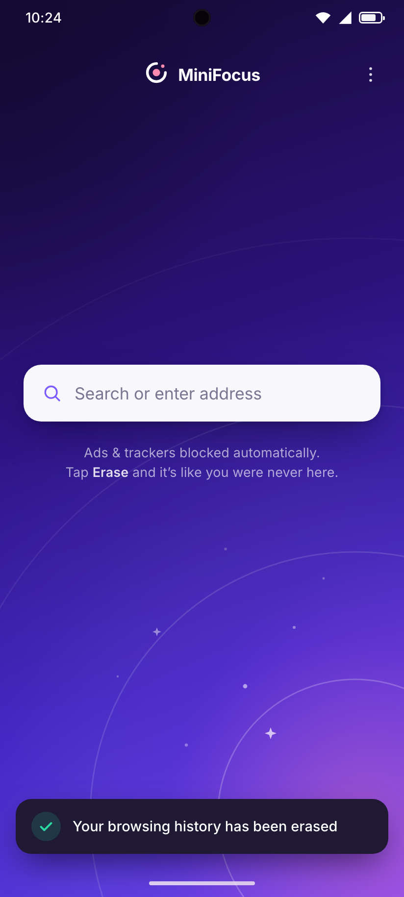
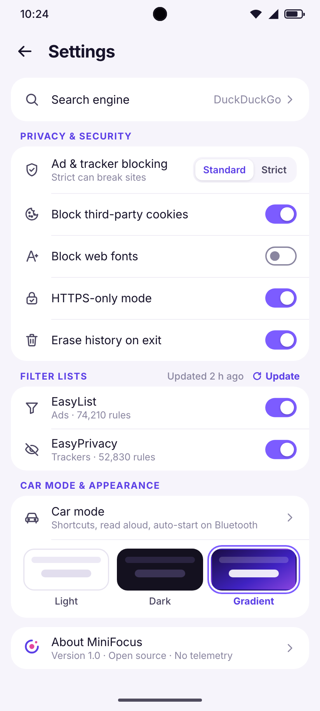
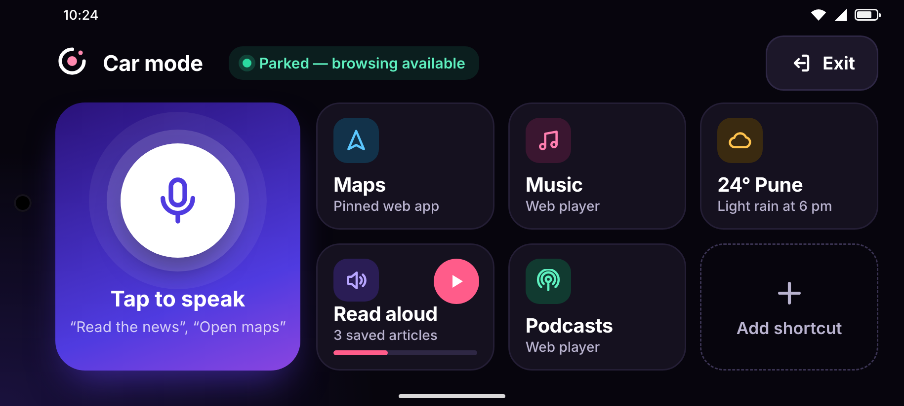
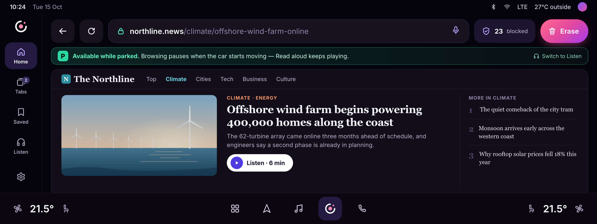

A minimal, privacy-first Android browser · Design v1 — key screens

Full-bleed gradient, one big search field. Nothing else to look at.

Slim bar: lock, domain, shield with blocked count, menu. Erase button floats bottom-right.

Tap the shield: what was blocked, by category, plus per-site switches.

One tap wipes the session. A soft wave sweeps from the button, then the confirmation toast.

Blocking level, cookies, fonts, HTTPS-only, erase on exit, filter lists, theme.

High-contrast dark, a huge voice button and big shortcut tiles (all ≥ 76 dp). Browsing only while parked; Read aloud works while driving.

Android Automotive: full browser while parked, with a clear banner. Android Auto: a Read-aloud media list instead, since browsing isn’t allowed there.